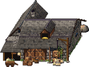
Склад
Большой каменный амбар. Хранит все товары, трудяги свозят сюда излишки.
66
Фундамент 4×3
Всё берётся из данных игры, поэтому не отстаёт от версии.
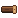
БрёвнаДоски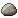
Камень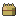
Сено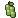
ХмельПивоМука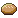
Хлеб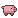
СвиньиКолбаса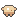
Курица (тушка)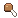
Куски курицыКруассаны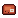
Стейки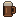
Тёмное пиво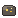
Золотая рудаЗолото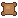
Шкуры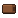
Кожа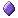
Банки маны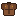
Кожаный доспех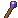
ПосохиМантии магаМечиЛукиКинжалыЖелезный доспех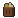
МусорПепелСтоимость указана в товарах; фундамент — в клетках. Поворот здания — клавиша T в игре.

Большой каменный амбар. Хранит все товары, трудяги свозят сюда излишки.
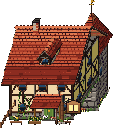
Двухэтажная школа с колокольней. Обучает жителей за 1 золото.
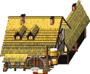
Голодные жители едят здесь курицу, колбасу или хлеб и запивают пивом. Тушку курицы разделывают на 4 куска. Пьяный может уснуть прямо на дороге.
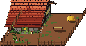
Пастух приручает диких коз. Ручная коза возит груз по дорогам — по 2 штуки за раз. До 3 коз на загон.
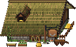
Конюх растит лошадей на сене и зерне. Каждая лошадь с телегой — извозчик: везёт сразу весь стек, до 5 штук. До 3 на конюшню.
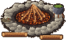
Сюда трудяги сносят мусор из урн. Сгорая, он даёт пепел — фермы удобряют им поля, урожай растёт быстрее и богаче.
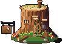
Бревенчатая избушка. Лесоруб рубит взрослые деревья и сажает новые.
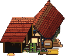
Распиливает брёвна на доски.
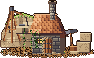
Добывает камень. Ставить рядом с каменными глыбами.
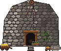
Добывает золотую руду. Ставить вплотную под скалой.
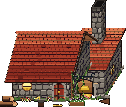
Плавит руду в золото, сжигая брёвна.
Добывает железную руду. Ставить вплотную под скалой.
Домница с мехами: из железной руды и брёвен выходят железные слитки для оружия и доспехов.
Кузнец-оружейник ковёт мечи и кинжалы, гнёт луки. Герой и рекруты берут оружие здесь.
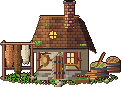
Выделывает шкуры в кожу.
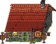
Шьёт кожаные доспехи, а при наличии железа клепает и железные.
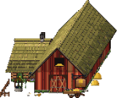
Фермер сеет и жнёт поля пшеницы, которые вы заложили рядом. Сено — побочный продукт жатвы.
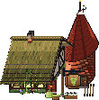
Хмелевод растит хмель на шестах вокруг и сушит шишки в башне.
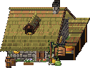
Варит пиво из зерна и хмеля. Пиво везут в трактир.
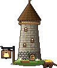
Мелет зерно в муку.
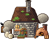
Печёт хлеб из муки.
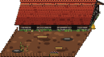
Каждая охапка сена: свиньи подрастают на треть и появляется поросёнок. Взрослых везут на бойню.
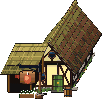
Из свиньи — колбаса и шкура.
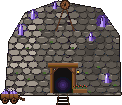
Шахтёр добывает магические камни. Ставить под скалой с кристаллами.
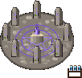
Камни отдают силу в банки маны и становятся обычными камнями. Работает сам.
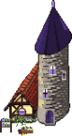
Чародей создаёт посохи и мантии мага.
Каменный зал с башней и тренировочным двором. Мастер воинов учит держать меч и носить железо.
Лесная ложа с дозорной вышкой и мишенями. Мастер лучников учит меткости и быстрым ногам.
Кособокий дом с подвалом и глухими окнами. Атаман учит ловкости рук и тому, что плохо лежит.
Башня со звёздным куполом и библиотекой. Архимаг учит смекалке и заклинаниям.
Каждый новый гном — трудяга. В школе (за 1 золото) его учат профессии, а некоторые профессии появляются сами, когда построено нужное здание.
Профессии: Трудяга, Работяга, Лесоруб, Плотник, Каменотёс, Пахарь, Пекарь-мельник, Шахтёр, Металлург, Свинопас-кожевник, Мясник, Бронник, Чародей, Пивовар, Пастух-конюх.
Герои, воины, лучники, разбойники и маги приходят через гильдии. Извозчик — это конюшня с лошадью и телегой, вьючная коза — из загона для коз.
Герой растёт вместе с городом и боями: высший уровень — 15-й. Класс он получает в гильдии; у воинов учат варвара, у магов — друида. У каждого класса по две способности (вторая открывается с 4-го уровня), на клавишах Z и X.